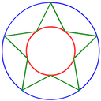

| Variable | Description |
| width |
Width of the drawing area (screen) in pixels. This is a dynamic variable: it changes if the browser window is resized. |
| height |
Width of the drawing area (screen) in pixels. This is a dynamic variable: it changes if the browser window is resized. |
| Function | Description & Example |
| print(data, color) |
Output the supplied data to the screen in a standard font. Color parameter is not required and is black by default. print('The screen is ' + width + ' by ' + height + ' pixels.') print('Resize the browser window to see what happens!', 'red') |
| Function | Description & Example |
| clear_canvas() |
Clear the screen with current background color. |
| set_default_color(color) |
Set default drawing color, which is originally black. set_default_color('yellow') |
| set_default_background_color(color) |
Set default background (fill) color, which is originally black. set_default_background_color('green') |
| set_default_line_thickness(thickness) |
Set default line thickness, which is originally 1. set_default_line_thickness(17) |
| Function | Description & Example |
| line(x0, y0, x1, y1, color, thickness) |
Draw a line of the specified thickness and color between two given points. Color and thickness are not required and are black and 1 respectively by default for all graphics primitives. line(100,100, 200,200) line(0,0, width,height, 'blue') line(width/2,0, width/2,height, 'red', 40) |
| rectangle(x0, y0, x1, y1, color, thickness) |
Draw a rectangle defined by the top left and bottom right corners. rectangle(100,100, 200,200) rectangle(width/2,height/2, width,height, 'blue') rectangle(width/3,0, width/2,height, 'red', 40) |
| fill_rectangle( x0, y0, x1, y1, color, thickness) |
Draw a solid (filled) rectabgle defined by the top left and bottom right corners. fill_rectangle(100,100, 200,200) fill_rectangle( width/2,height/2, width,height, 'blue') |
| circle(x, y, radius, color, thickness) |
Draw a circle of the specified radius centered on a given point. circle(100,100, 80) circle(200,100, 80, 'blue') circle(width/2,height/2, height/6, 'red', 20) |
| fill_circle(x, y, radius, color, thickness) |
Draw a solid (filled) circle of the specified radius centered on a given point. fill_circle(100,100, 80) fill_circle(200,100, 80, 'blue') |
| regular_polygon( x, y, radius, faces, color, thickness) |
Draw a regular polygon of n faces centered on a given point. regular_polygon(100,100, 80, 5) regular_polygon(200,100, 80, 6, 'blue') |
| fill_regular_polygon( x, y, radius, faces, color, thickness) |
Draw a solid (filled) regular polygon of n faces centered on a given point. fill_regular_polygon(100,100, 80, 5) fill_regular_polygon(200,100, 80, 6, 'blue') |
| star( x, y, radiusin, radiusout, faces, color, thickness)  |
Draw a star of n vertices centered on a given point. star(100,100, 40,80, 5) star(200,100, 40,80, 6, 'blue') |
| fill_star( x, y, radiusin, radiusout, faces, color, thickness) |
Draw a solid (filled) star of n vertices centered on a given point. fill_star(100,100, 40,80, 5) fill_star(200,100, 40,80, 6, 'blue') |
| Function | Description & Example |
| random(a, b) |
Return a random number between a and b inclusively, i.e. r ∈ [a, b], if both are integers. If either of the numbers is non-integer, a floating-point number is returned between a and b exclusively, i.e. r ∈ (a, b). |
| random([1, 101, 201, 301, 401]) |
Return a random element in an array. random(['cow', 'sheep', 'goat', 'rooster']) years = [1990, 1995, 2000, 2005, 2010] random(years); |
| random('color') |
Return a random color. |
| random('red') |
Return a random reddish color. Also available: random('green') random('blue') random('yellow') random('violet') random('teal') random('gray') |
f(x)is the same as
[f(x0), f(x1), f(x2), ..., f(xn)]
x = [1, 2, 3, 4, 5]
sq(x) → 1, 4, 9, 16, 25
Same goes for min and max. Either or both of the
arguments can be arrays.
max(sq(x)) → 25
max(sq(x), sq(sq(x))) → 625
min(sq(x), -10) → -10
| Function | Description |
| abs(x) |
Absolute value of x, a.k.a. |x|. |
| sin(x) |
Sine of x degrees. |
| cos(x) |
Cosine of x degrees. |
| tan(x) |
Tangent of x degrees. |
| round(x) |
Round x to the nearest integer, a.k.a. ||x|| or [x]. |
| sign(x) |
Return -1 if x < 0, 1 otherwise. |
| sqrt(x) |
Square root of x, a.k.a. √x. |
| sq(x) |
Square of x, a.k.a. x2 |
| mod(a, b) |
Modulus, a.k.a. reminder after divison of a by b. b must be a scalar. |
| a ^ b |
a to the power of b, or ab. b must be a scalar. |
| min(a, b) |
Return the smallest value. |
| max(a, b) |
Return the largest value. |
| Function | Description & Example |
| loop n ... end |
Repeat the contents n times. loop 10 print(random(1,10)) end loop 100 x = random(0, width) y = random(0, height) r = random(10, 50) c = random('color') fill_circle(x, y, r, c) end |
| loop(start, end, step, variable { ... }) |
Loop the variable from start to end in increments of step. Loops can be nested. loop(1980, 2010, 5, year { print('The year was ' + year) }) loop(0, width, width/10, x { circle(x, height/2, 50) }) step = min(width/10, height/10) loop(0, width, step, x { loop(0, height, step, y { fill_circle(x, y, step/2, random('color')) }) }) |
| loop(delay) |
Loop the entire code indefinitely, waiting delay seconds between successive executions, or 1/delay times per second. delay is 0.1s by default. |